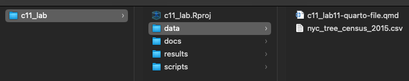

Class 11 Lab: Migrating from Scripts to Quarto Publication
Fall 2025 | Instructor: Stephen Metts | PGUD 5160 - CRN 2247
Preamble
In this final demonstration lab, we will continue to repeat the project setup phase of previous weeks (setting the working directory to c11_lab).
To start, we will conduct an EDA workflow in R script format; followed by a Quarto publication format. We’ll see important differences between the purposes, formats and conventions of each workflow type. For our final projects, we will produce the deliverable itself as a Quarto publication for both online and offline distribution.
Data
To start, we will utilize NYC 2015 Tree Count from the OpenNYC platform. We first subset this large data set to just 5 variables:
tree_dbh| Diameter of the tree, measured at approximately 54” / 137cm above the ground.status| Indicates whether the tree is alive, standing dead, or a stump.spc_common| Common name for species, e.g. “red maple”cncldist| Council district in which tree point is locatedborocode| Code for borough in which tree point is located: 1 (Manhattan), 2 (Bronx), 3 (Brooklyn), 4 (Queens), 5 (Staten Island)
For c11_lab, we will download a prepared data directory that has all necessary data for both this week’s lab.
This data subdirectory will be in .zip format; make sure to uncompress the directory before engaging it with this week’s lab script. Further, change the name from lab_11_data-subdirectory to simply data and place it into your c11_lab directory.
Lab Setup - Part I
Step 1: Project Management in RStudio for c11_lab
As we have done for previous labs, we will create a c11_lab project directory:

A well-organized folder structure within an RStudio project is crucial. Common conventions include:
data/: For raw data (treated as read-only).
docs/: For documentation or R Markdown files.
results/: For outputs and generated results.
scripts/: For R scripts and analysis pipelines.
Step 2:
With the c11_lab.Rproj established and the subdirectories for our data analyses established, we can print both the working directory and all the paths and files therein:
Your ‘upstream’ path will likely be different than Users/x15… if you are using macOS, your full path would be akin to /Users/your_machine_name/Desktop/c11_lab. On macOS, this can also be expressed as ~/Desktop/c11_lab:
The tilde ~ is a special character that acts as a shortcut for the current user’s home directory.
This is fine; we want to simply make sure that the directory we created - c11_lab is indeed the directory in which and from which we are and will be working.
Step 3:
For this week’s lab, utilize the following script in conjunction with the previous data subdirectory download.
Open the script from the scripts subdirectory: File>Open File>c11_lab>scripts>c11_lab11-script-1.R
Lab 11 | EDA for the 2015 NYC Tree Count Data Set
This lab 11 will utilize EDA techniques that we learned in prior classes to read, organize, transform, explore, plot and visualize the 2015 NYC Tree Count Data Set across 5 dimensions of the larger data set. Once complete, we will explore then same EDA workflow from the script in a Quarto publication workflow. The goal of the lab is to embed typical EDA processes first in script format, followed by a polished publication format.
🔧 0) Setup
Goal: Load required packages, set global options, and define the data path.
- Packages loaded
tidyverse— core data wrangling and plotting tools (dplyr,ggplot2, etc.).janitor— cleaning column names (clean_names()).forcats— working with factors (e.g.,fct_other(),fct_reorder()).scales— nicer numeric labels on axes (e.g.,label_comma()).ggrepel— (available for labeled plots if needed).
- Global options
options(dplyr.summarise.inform = FALSE)
Suppresses verbose messages fromsummarise().options(scipen = 999)
Reduces scientific notation so large numbers print normally.
- Data path
data_path <- "~Desktop/c11_lab/data/nyc_tree_census_2015.csv"- This should point to the locally saved CSV of the 2015 Tree Census.
- Only a subset of columns is read later to keep things efficient.
🧼 1) Read & Clean
Goal: Read in the raw CSV, standardize key variables, and remove impossible/invalid values.
- Selective column import
- Uses
readr::read_csv()withcol_select = c(tree_dbh, status, spc_common, cncldist, borocode)
→ Only pulls columns needed for this lab:tree_dbh(diameter at breast height, in inches)status(Alive/Dead/Stump/etc.)spc_common(common species name)cncldist(council district)borocode(numeric borough code: 1–5)
- Uses
- Cleaning column names
clean_names()converts names tosnake_case(e.g.spc_common).
- Variable standardization in
mutate()status→ converted to factor.spc_common:- Empty strings converted to
NAwithna_if(spc_common, ""). - Converted to title case (
str_to_title()), then factor.
- Empty strings converted to
tree_dbh:- Converted to numeric with
as.numeric()wrapped insuppressWarnings()to avoid noisy messages.
- Converted to numeric with
cncldistandborocode:- Cast to integer with
as.integer()andsuppressWarnings().
- Cast to integer with
- Deriving borough name
boronamecreated fromborocodeusingcase_when():- 1 → Manhattan
- 2 → Bronx
- 3 → Brooklyn
- 4 → Queens
- 5 → Staten Island
- 1 → Manhattan
- Defensive filtering on DBH
filter(!is.na(tree_dbh), tree_dbh >= 0, tree_dbh <= 200)
→ Removes missing or clearly invalid diameters.
- Structure check
glimpse(trees)provides a quick overview of the cleaned data (column types + sample values).
📊 2) Quick Summaries
Goal: Get fast, high-level summaries before deeper visualization.
- Base R summary
summary(select(trees, tree_dbh, status, spc_common, cncldist, borocode))
→ Shows:- Range and distribution for
tree_dbhandcncldist. - Counts for factor variables like
statusandspc_common. - Quick check for missing values or strange ranges.
- Range and distribution for
- Counts by borough and status
trees %>% count(boroname, status, sort = TRUE)
→ Produces a frequency table of tree counts for each combination of borough and status.print(n = 10)shows the top 10 combinations:- Useful to see which boroughs have the most trees and typical status breakdowns.
🌿 3) Identify Top Species
Goal: Focus the analysis on the most common species to keep visualizations readable.
- Parameter for how many species to keep
top_n_species <- 15
→ You can change this number to show more/fewer species.
- Finding top species
count(spc_common, sort = TRUE, name = "n")
→ Ranks species by total count.slice_head(n = top_n_species)keeps the top N.pull(spc_common) %>% as.character()
→ Extracts the names of these species as a character vectortop_species.
- Creating a grouped factor
trees <- trees %>% mutate(spc_common_top = fct_other(spc_common, keep = top_species))
→ Usesfct_other()to:- Keep the top species as distinct categories.
- Lump all other species into an
"Other"category.
- This is handy for bar plots where you want to avoid a long tail of rare species cluttering the chart.
📈 4) EDA Visualizations
Goal: Use ggplot2 to visualize distributions and patterns in tree size, status, species, and geography.
🌲 4a) DBH Distribution (Raw)
- Object:
p_dbh_hist - What it shows:
- Histogram of
tree_dbh(diameter in inches). - Reveals skewness, peaks in common tree sizes, and outliers.
- Histogram of
- Why it’s useful:
- Helps assess whether typical statistical assumptions (like normality) are reasonable.
- Gives an intuitive feel for the range of tree sizes.
🪵 4b) DBH Distribution (log1p)
- Object:
p_dbh_hist_log - What it shows:
- Histogram of
log1p(tree_dbh)(i.e.,log(1 + DBH)). - Compresses the right tail of large tree diameters.
- Histogram of
- Why it’s useful:
- Makes patterns among smaller trees easier to see.
- Demonstrates how log transformations tame heavy-tailed distributions.
📦 4c) Status Composition
- Object:
p_status - What it shows:
- Bar chart of tree counts by status (Alive, Dead, Stump, etc.).
- Key features:
- Uses
fct_infreq(status)to order bars from most to least common. scale_y_continuous(labels = label_comma())makes large counts readable.
- Uses
- Why it’s useful:
- Quick view of the overall health/status distribution of trees citywide.
🌳 4d) Top Species (Overall)
- Object:
p_species_top - What it shows:
- Horizontal bar chart of counts for the top N species (using
top_species).
- Horizontal bar chart of counts for the top N species (using
- Key steps:
- Filter trees to
spc_common %in% top_species. - Count occurrences per species and reorder factors by count (
fct_reorder()).
- Filter trees to
- Why it’s useful:
- Highlights which species dominate NYC street plantings.
- Useful for thinking about biodiversity and urban forestry policy.
📦 4e) DBH by Status (Boxplot, Trimmed)
- Object:
p_dbh_status - What it shows:
- Boxplots of
tree_dbhfor each status category.
- Boxplots of
- Key features:
coord_cartesian()limits the y-axis to the 1st–99th percentile of DBH:- Focuses on the “typical” range without discarding data.
- Outliers are still included but visually clipped for clarity.
- Why it’s useful:
- Compares typical tree sizes across status.
- Raises questions like: are dead trees typically smaller or larger?
🌱 4f) Median DBH by Species (Top N)
- Object:
p_dbh_species - What it shows:
- Scatterplot of median DBH for each of the top species.
- Point size reflects
n(number of trees of that species).
- Key features:
fct_reorder(spc_common, median_dbh)orders species by median DBH.scale_size_continuous(labels = label_comma())improves size legend.
- Why it’s useful:
- Shows which common species tend to be larger or smaller.
- Combines information about size and prevalence in one plot.
- Shows outliers which can be suppressed if desired.
🗺️ 4g) Top Districts by Tree Count (cncldist)
- Intermediate summary:
dist_summary- Groups by
cncldistand calculates:n_trees= total number of trees per district.med_dbh= median DBH per district.
- Groups by
- Plot object:
p_dist_counts - What it shows:
- Horizontal bar chart of the top 25 council districts by tree count.
- Why it’s useful:
- Highlights geographic variation in tree abundance.
- Good starting point for thinking about equity and spatial distribution.
🏙️ 4h) Borough Overview (Derived from borocode)
- Object:
boro_summary - What it shows:
- Table of:
boronamen_trees(total trees in each borough)med_dbh(median tree size in each borough)
- Table of:
- Why it’s useful:
- Quick, interpretable summary by borough.
- Helps compare overall tree abundance and typical sizes across Manhattan, Bronx, Brooklyn, Queens, and Staten Island.
🧮 5) Light Text Summaries
Goal: Capture key numeric facts in small summary tables/tibbles.
🔢 5a) Overall Summary
- Object:
overall - Metrics:
n— total number of trees in the dataset after cleaning.median_dbh— median diameter across all trees.p95_dbh— 95th percentile of DBH (approximate upper range of “typical” large trees).
- Why it’s useful:
- Gives a compact numeric snapshot of data size and scale.
📋 5b) Status Summary (Alive/Dead/Stump)
- Object:
status_summ - Process:
- Filters to statuses
"Alive","Dead", and"Stump". - Groups by
statusand computes:n— count of trees in each status category.median_dbh— median diameter for that status.
- Adds
pct = n / sum(n)to express each status as a share of the total.
- Filters to statuses
- Why it’s useful:
- Helps interpret the status composition numerically, not just visually.
- Encourages questions about survival, maintenance, and replacement.
🌸 5c) Species Summary (Top Species Only)
- Object:
species_summ - Process:
- Filters to
spc_common %in% top_species. - Groups by
spc_commonand computes:n— count per species.median_dbh— median diameter per species.
- Arranges in descending order of
nand displays the top 10.
- Filters to
- Why it’s useful:
- Pairs abundance and size information for the most common species.
- Good for quickly scanning which species dominate both in count and canopy contribution.
💾 6) Save PNG Outputs (Optional)
🔁 This section is optional.
It exports plots and summary tables to files so you can reuse them in reports, slides, or other projects.
Goal: Write cleaned plots and summaries to disk as PNG images and small CSV files.
- Output directory
out_dir <- "./tree_eda_results"- Creates the folder if it doesn’t exist:
if (!dir.exists(out_dir)) dir.create(out_dir, recursive = TRUE)
- Helper function for saving plots
save_plot <- function(p, filename, w = 9, h = 6, dpi = 150) { ... }- Wraps
ggsave()with sensible defaults:- Width = 9 inches
- Height = 6 inches
- DPI = 150 (reasonable for screen and basic printing)
- Plots exported
dbh_hist.png— Raw DBH distribution.dbh_hist_log.png— DBH distribution on log1p scale.status_counts.png— Counts of trees by status.top_species.png— Top species overall (counts).dbh_by_status.png— Boxplots of DBH by status.median_dbh_by_species.png— Median DBH by species (Top N).district_top_counts.png— Top 25 districts by tree count.
- CSV summaries exported
district_summary.csv—dist_summary(trees and median DBH by council district).borough_summary.csv—boro_summary(trees and median DBH by borough).species_top_summary.csv—species_summ(counts and median DBH for top species).
- How to use this section
- Run Sections 0–5 to explore interactively in RStudio.
- Then, if you want to save outputs for later use, run Section 6.
- You can safely skip it if you don’t need files written to disk.
Lab Setup - Part II
Step 1: Project Management in RStudio for c11_lab
With our EDA analyses complete via R Script format, we will segue to essentially the same workflow, but this time in the Quarto publication format. The advantage of Quarto is in its flexibility as a publication and dissemination format. A significant upgrade from R Markdown, Quarto allows both for more publication parameter options as well as easier code chunk formatting, library and data handling.
To start, we will open the c11_lab11-quarto-file.qmd that should be located in our /data subdirectory.
We will discuss the critical sections of a Quarto .qmd file to start, and how it operates:
YAML metadata header: This is a block of YAML code at the very top of the file, enclosed by — lines, that defines document-level options such as the title, author, date, and output format.
Plain text (Markdown): This is the main content of your document, written using Markdown syntax for formatting text, creating lists, and adding links or images.
Executable code chunks: These are blocks of code, typically starting and ending with triple backticks () and a language identifier (e.g., {r}), that contain executable code.
Code chunk options: Options can be set at the top of each code chunk using special comments (e.g., #| include: false) to control how the code and its output are handled during rendering.
Inline code: Inline code expressions can also be used within the Markdown text to insert results directly into the document.
Scripts & Lab Data:
Class 11 Lab 11 R Script #1 - open in your RStudio
scriptsFile>Open File>c11_lab>scripts>c11_lab11-script-1.R